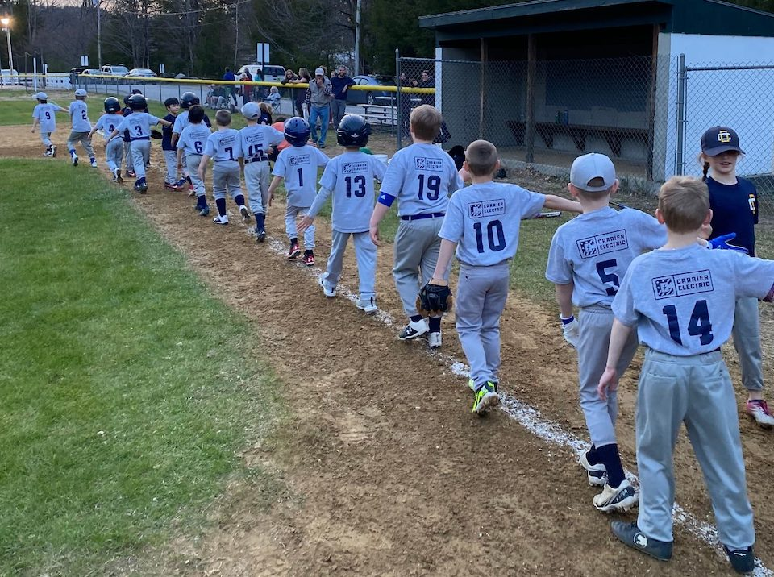

Baseball
March through June.
Ages: 5 to 12.
Teams: T-Ball (5-6yo), Rookies (7-8yo), Minors (9-10yo), Majors (11-12yo)
Organized through Kearsarge Valley Cal Ripken League.
Registration opens in January.

March through June.
Ages: 5 to 12.
Teams: T-Ball (5-6yo), Rookies (7-8yo), Minors (9-10yo), Majors (11-12yo)
Organized through Kearsarge Valley Cal Ripken League.
Registration opens in January.
March through June.
Ages: 6 to 12.
Teams: U-8, U-10, U-12
Organized through Kearsarge Mountain South.
Registration opens in January.
May
Ages: 4 to 14.
Tuesdays for four weeks after school at Simonds Elementary. Professional coach and team from New England College. Pre-K/K and grade-school clinics.
Registration opens in March.
September through mid-October.
Ages: 4 to 12.
Teams: PreK/K Coed, 1/2 Coed, 3/4 Boys, 3/4 Girls, 5/6 Boys, 5/6 Girls
Organized through Merrimack Valley Soccer League. Volunteer coaches.
Pre-K/K is practice only. 1/2 plays locally with Bradford and New London, games on Saturday mornings. Practices begin the first week of school.
3/4 and 5/6 play in MVSL with several local towns, games alternating Fridays, and Saturday afternoons. Practices start mid-August.
Registration opens in July.
December through February.
Ages: 4 to 18.
Organized through WYSA, instruction provided by Pats Peak, followed by one hour of free-skiing with WYSA chaperones. No transportation provided this year due to shortage of bus drivers.
Registration opens in November, through Pats Peak.